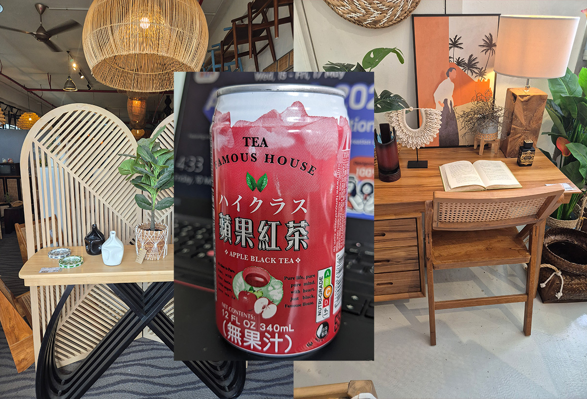
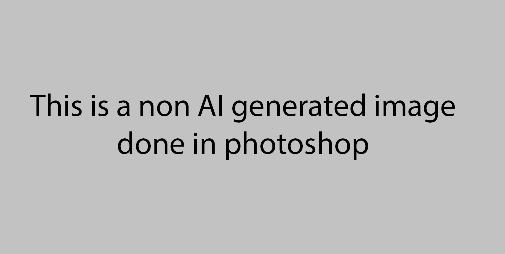
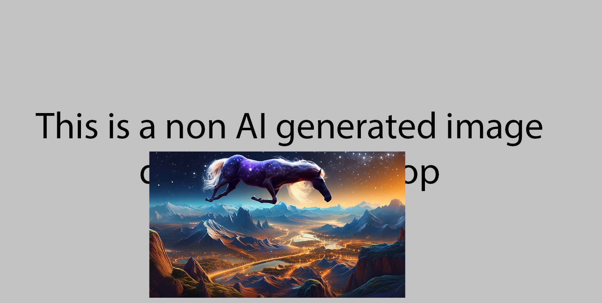

1. This is a non-ai image made up with several non-ai images (content credentials enabled)
2. This is a image created using firefly only (inbuilt with content credentials)
3. This is a image created using firefly and Photoshop Gen AI (content credentials auto enabled during export)
4. This is a non AI image done in Photoshop (content credentials not enabled)
5. This is a non AI image with an AI image (adobe firefly) placed into it (content credentials auto enabled during export)
6. This is a AI image created using Microsoft Designer (inbuilt with content credentials)
6. This is a AI image created using Microsoft Designer with a non-ai image (content credentials enabled)